0KUF-004
Instalação do driver de impressora após baixar a versão mais recente do site de Canon.
1
Faça o login no computador com uma conta de administrador.
2
Baixe o driver da impressora do site da Canon em (http://www.canon.com/).
Para mais informações sobre como baixar o driver da impressora, consulte a página do download correspondente à impressora.
3
Descompacte o arquivo baixado.
4
Se estiver usando uma conexão através de LAN com ou sem fio, conecte a impressora ao computador.
Conectando via LAN com fios
Conectando via LAN sem Fio
Conectando via LAN com fios
Conectando via LAN sem Fio
Antes de começar a instalar o driver da impressora, utilize a "MF/LBP Network Setup Tool" (incluída no arquivo baixado) para ajustar as configurações de rede.
5
Se usar uma conexão USB, desligue a impressora.
A impressora pode não ser reconhecida se o driver for instalado com ela ligada. Sempre desligue a impressora antes de instalar.
6
Abra a pasta que contém o driver da impressora.
Para sistemas operacionais de 32 bits
[UFRII] [brazilian_portuguese] Pastas [32BIT] do arquivo baixado
[brazilian_portuguese] Pastas [32BIT] do arquivo baixado
[UFRII]
Para sistemas operacionais de 64 bits
[UFRII] [brazilian_portuguese] Pastas [x64] do arquivo baixado
[UFRII]

Se não souber se o Windows Vista, 7, 8, Server 2008 ou Server 2012 utilizado é de 32 ou 64 bits, consulte Verificando a arquitetura de bits.
7
Clique duas vezes em "Setup.exe".
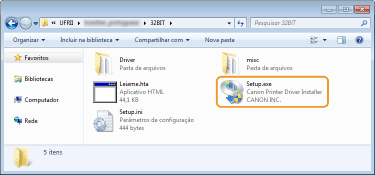
8
Leia o Contrato de Licença e clique em [Sim] se você concordar com ele.
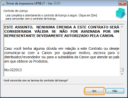
9
Instale o driver da impressora.
 Conexão com uma LAN com ou sem fio
Conexão com uma LAN com ou sem fio
|
1
|
Selecione [Padrão], selecione a caixa de marcação [Reativar impressoras no modo de hibernação e pesquisar] e clique em [Avançar].
Se estiver usando a impressora em um ambiente IPv6, clique em [Configurações detalhadas]
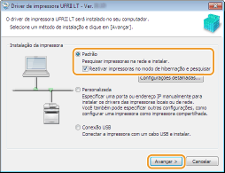 Em [Configurações detalhadas]
O tipo de porta pode ser selecionado. 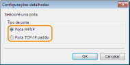 [Porta MFNP] (somente para ambientes IPv4)
Esta porta detecta automaticamente o endereço IP da impressora. Mesmo se o IP da impressora mudar, ela permanecerá conectada ao computador se estiver na mesma subrede. Assim, não é preciso adicionar uma nova porta a cada vez que o endereço IP é mudado. Se a impressora for usada em um ambiente IPv4, selecione esta opção. [Porta TCP/IP padrão]
Porta padrão do Windows. Sempre que o IP da impressora é mudado, é preciso adicionar uma nova porta. |
|
|
2
|
Marque a caixa de verificação da impressora a ser instalada em [Lista de impressora].
Se quiser cancelar a impressão em um ambiente IPv6, clique na guia [Dispositivos IPv6].
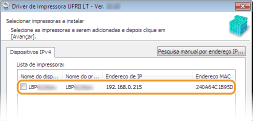 Se a tela [Selecionar processo] for exibida
Se já houver um driver de impressora instalado, a tela [Selecionar processo] será exibida antes da tela [Selecionar impressoras a instalar]. A opção selecionada nessa etapa não faz diferença para a configuração da impressora. Basta clicar em [Avançar]. 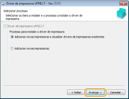 Se a guia [Dispositivos IPv6] não for exibida
Retorne à tela anterior, clique em [Configurações detalhadas] Se a impressora que você procura não aparecer na [Lista de Impressora]
Problema com a conexão LAN com fio/sem fio |
|
|
3
|
Selecione a caixa de seleção [Definir informação da impressora] e clique em [Avançar].
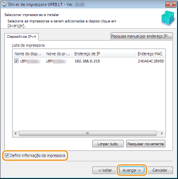 |
|
|
4
|
Defina as informações da impressora conforme necessário e clique em [Avançar].
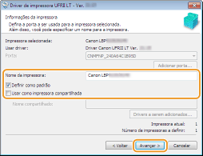 [Nome da impressora]
Mude o nome da impressora conforme necessário. [Definir como padrão]
Selecione esta caixa de seleção se quiser usar a impressora como impressora padrão. [Usar como impressora compartilhada]
Selecione esta caixa de seleção se quiser compartilhar a impressora utilizando o computador onde a instalação está sendo realizada como servidor de impressão. Configurando um servidor de impressão enquanto instala o driver da impressora |
|
|
5
|
Verifique as informações da impressora em [Lista de impressoras para instalação do driver] e clique em [Iniciar].
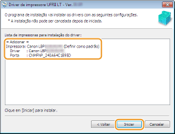
|
 O driver da impressora começará a ser instalado. Conexão USB
O driver da impressora começará a ser instalado. Conexão USB|
1
|
Selecione [Conexão USB], e clique em [Avançar].
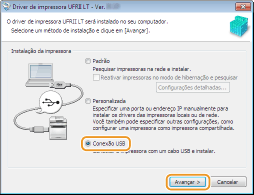 |
|
|
2
|
Clique em [Sim].
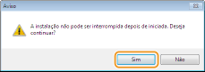 |
|
|
3
|
Quando a tela seguinte for exibida, conecte o computador à impressora usando um cabo USB (Conectando via USB) e ligue a impressora.
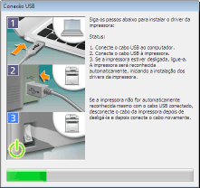
|
10
Marque a caixa de seleção [Reiniciar meu computador agora] e clique em [Reiniciar].
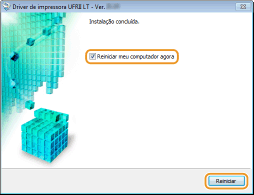
Verificação dos resultados da instalação
|
Se o driver da impressora tiver sido instalado corretamente, o ícone da impressora instalada será exibido na pasta de impressoras (Exibindo a pasta Impressora).
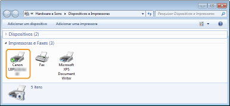 |
 |
|
Se o ícone não aparecer
Desinstale o driver da impressora (Desinstalação do driver da impressora) e recomece o procedimento de instalação.
|